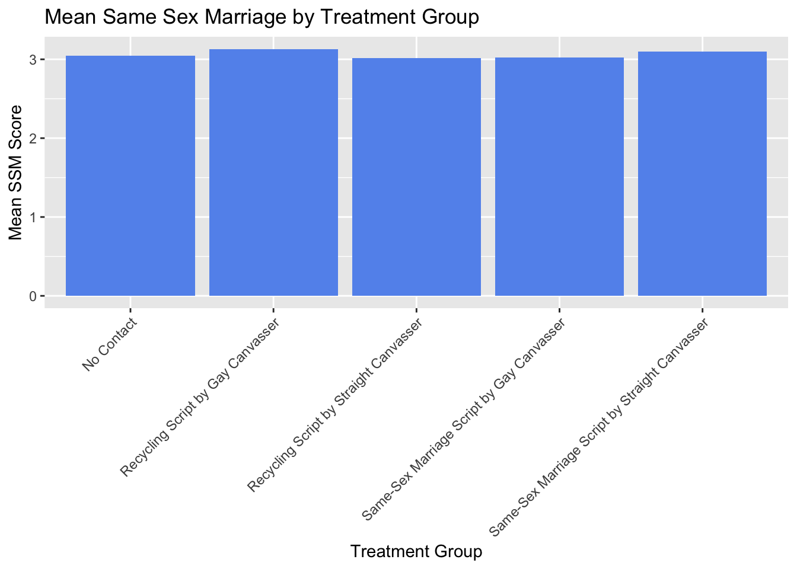
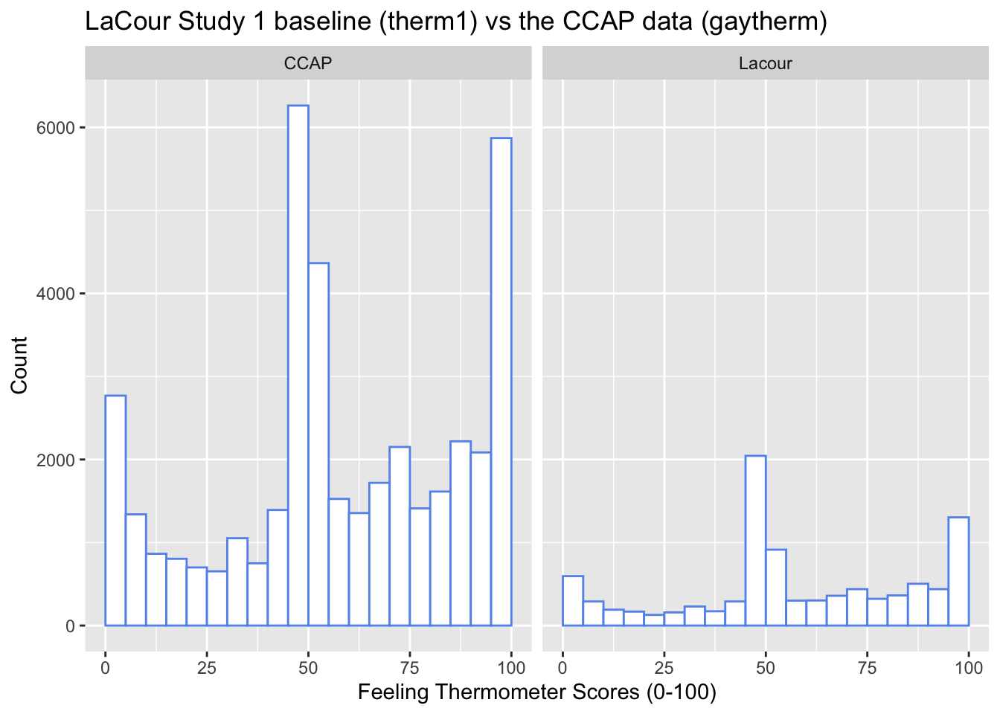
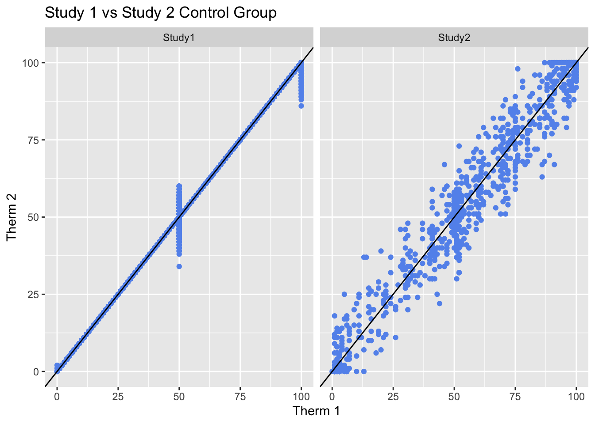
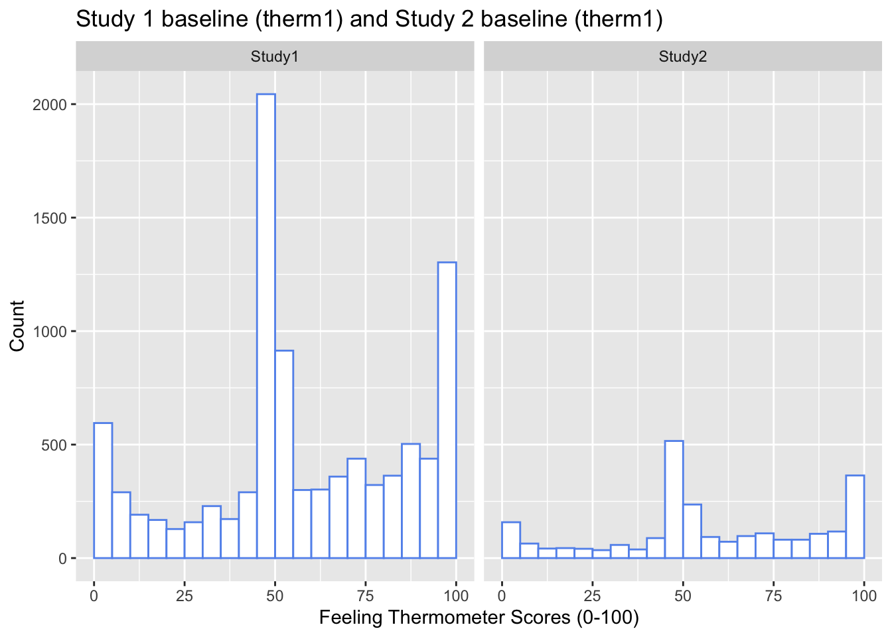

[1] "No Contact"
[2] "Recycling Script by Gay Canvasser"
[3] "Same-Sex Marriage Script by Gay Canvasser"
[4] "Recycling Script by Straight Canvasser"
[5] "Same-Sex Marriage Script by Straight Canvasser"
Q1.1 There are 69,592 observations in gay.csv. There are 2 unique values in study. The five possible treatment conditions are “No contact”, “Recycling Script by Gay Canvasser”, “Same-sex Marriage Script by Gay Canvasser”, “Recycling Script by Straight Canvasser”, and “Same-sex Marriage Scirpt by Straight Canvasser”.
# A tibble: 5 × 2
treatment ssm_sd
<chr> <dbl>
1 No Contact 1.68
2 Recycling Script by Gay Canvasser 1.70
3 Recycling Script by Straight Canvasser 1.68
4 Same-Sex Marriage Script by Gay Canvasser 1.67
5 Same-Sex Marriage Script by Straight Canvasser 1.68
Q1.3 Yes, for the most part, the standard deviations are roughly similar across groups with the sd values ranging from 1.68 to 1.70. In a randomized experiment, standard deviations are very important because they indicate the spread of the data and to what extent values are from the mean. If the standard deviation is all relatively similar and small, then this indicated our randomized experiment is working properly and observed differences can be attributed to the treatment.
#create a bar plot of the mean ssm by treatmentggplot(ssm, aes(x = treatment, y = ssm_mean)) +geom_col(fill ="cornflowerblue") +labs(title ="Mean Same Sex Marriage by Treatment Group",x ="Treatment Group",y ="Mean SSM Score") +theme(axis.text.x =element_text(angle =45, hjust =1))

Question 1 Part 2
#filter gay_clean moregay_clean2 <- gay_clean %>%filter(treatment =="No Contact"| treatment =="Same-Sex Marriage Script by Gay Canvasser")#calculate Mean & SDsummarized <- gay_clean2 %>%group_by(treatment) %>%summarize(ssm_mean2 =mean(ssm, na.rm =TRUE),ssm_sd2 =sd(ssm, na.rm =TRUE))print(summarized)
# A tibble: 2 × 3
treatment ssm_mean2 ssm_sd2
<chr> <dbl> <dbl>
1 No Contact 3.04 1.68
2 Same-Sex Marriage Script by Gay Canvasser 3.03 1.67
#calculate Standardized difference in means#numerator(3.025195-3.042764)
[1] -0.017569
#find denominator1.666099^2+1.680540^2
[1] 5.600101
5.600101/2
[1] 2.80005
sqrt(2.80005)
[1] 1.673335
0.017569/1.673335
[1] 0.01049939
Q1.5. The standardized difference in means is -0.01049939. The mean and SD for each group is located above in the table. This difference is significantly below 0.25 which leads me to believe that in fact their is good balance and the two groups are very similar at baseline.
#filter gaygay_clean3 <- gay %>%filter(study ==1, wave ==2,treatment =="No Contact"| treatment =="Same-Sex Marriage Script by Gay Canvasser")#calculate Mean & SDsummarized2 <- gay_clean3 %>%group_by(treatment) %>%summarize(ssm_mean3 =mean(ssm, na.rm =TRUE),ssm_sd3 =sd(ssm, na.rm =TRUE))print(summarized2)
# A tibble: 2 × 3
treatment ssm_mean3 ssm_sd3
<chr> <dbl> <dbl>
1 No Contact 3.04 1.61
2 Same-Sex Marriage Script by Gay Canvasser 3.14 1.63
#difference in means3.139489-3.039615
[1] 0.099874
Q1.6 the difference in means here is 0.099874. Since the groups were balanced at baseline, a difference at wave 2 suggests that this difference was because of the treatment rather than any outside factors in the groups. In broader terms, the implementation of a gay canvasser had a small positive impact on support for same sex marriage in reference to the no contact group.
Question 2
#load more datagayreshaped <-read.csv("Data/Raw/gayreshaped.csv")ccap2012 <-read.csv("Data/Raw/ccap2012.csv")
Q2.1
gayreshaped has 11,948 observations. Its columns are study, treatment, therm1, therm 2, therm3, and therm4.
ccap2012 has 43,998 observations. Its column names are x, caseid, and gaytherm.
#summary statistics for gayreshaped therm1mean(gayreshaped$therm1[gayreshaped$study ==1], na.rm =TRUE)
Dataset Mean Median SD
1 Study 1 (therm1) 58.42785 52 28.51314
2 CCAP 2012 (gaytherm) 58.70517 54 29.36892
Q2.2 From this side by side table, I can see that the mean, median, and sd of the data from gayreshpaed and CCAP2012 look very similar. In comparing the two, CCAP2012 has slightly larger values of mean, median, and SD compared to gayreshaped, but they are all very similar.
#create side by side histogramsgayreshaped_study1_therm1 <- gayreshaped %>%filter(study ==1) %>%select(therm1) %>%rename(therm = therm1) %>%mutate(source ="Lacour")ccap2012_gaytherm <- ccap2012 %>%filter(!is.na(gaytherm)) %>%select(gaytherm) %>%rename(therm = gaytherm) %>%mutate(source ="CCAP")side_by_side_data <-bind_rows(gayreshaped_study1_therm1, ccap2012_gaytherm)ggplot(side_by_side_data, aes(x = therm)) +geom_histogram(breaks =seq(0, 100, by =5), color ="cornflowerblue", fill ="white") +facet_wrap(~source) +labs(title ="LaCour Study 1 baseline (therm1) vs the CCAP data (gaytherm)",x ="Feeling Thermometer Scores (0-100)",y ="Count")

Q2.3 the CCAP and Lacour histograms both look pretty similar. In that way, we observe spikes in both at about 0, 50, and 100. However, there seem to be many more observations and counts taken under consideration in the CCAP data. From these histograms, it seems as though the study 1 data may not come from a different population given that the two look so similar. Accordingly, this would support the claim that study 1 data is a replication or falsified data.
Question 2 Part 2
#filter new datastudy1_control <- gayreshaped %>%filter(study ==1, treatment =="No Contact") %>%select(therm1, therm2)study2_control <- gayreshaped %>%filter(study ==2, treatment =="No Contact") %>%select(therm1, therm2)#calculate study 1 valuesstudy1_correlation <-cor(study1_control$therm1, study1_control$therm2, use ="complete.obs")study1_correlation
#put side by sideside_by_side_results <-data.frame(Study =c("Study 1", "Study 2"),Correlation =c(study1_correlation, study2_correlation),StandardDeviation =c(study1_sd, study2_sd))side_by_side_results
Study Correlation StandardDeviation
1 Study 1 0.9975817 1.987678
2 Study 2 0.9734449 6.605738
Q2.4 If we first look at Study 1, we will see that there is a correlation of 0.998 which is quite a bit higher than the typical for real feeling thermometer data of 0.95 to 0.97. In other words, from therm1 to therm2 participants’ responses were likely very similar. Study 2’s correlation, 0.973 tends to look more similar to what we would expect with the value not far outside of the 0.95 to 0.97 range. Examining the standard deviations of the within person change, we can see that study 1’s standard deviation of 1.988 is quite small while study 2’s 6.606 seems to be more realistic and account for within person differences. This information all leads me to believe that study 2 is likely showing a more realistic and plausible pattern.
#create two side by side scatterplotscombined_studies <-bind_rows(study1_control %>%mutate(Study ="Study1"), study2_control %>%mutate(Study ="Study2"))ggplot(combined_studies, aes(x = therm1, y = therm2)) +geom_point(color ="cornflowerblue") +geom_abline(slope =1, intercept =0) +facet_wrap(~Study) +labs(title ="Study 1 vs Study 2 Control Group",x ="Therm 1",y ="Therm 2")
Warning: Removed 732 rows containing missing values or values outside the scale range
(`geom_point()`).

Q2.5 Study 2 definitely looks more like real longitudinal data. If you take a look at the right scatter plot all of the data is incredibly close to the 45 degree line and doesn’t mimic the actual variation you would probably see. As a result, study 2 looks more realistic because it shows that more widespread measure of spread that study 1 lacks. Study 1 also seems to have that “t” that we talked about in lecture in the middle right by 50.
Q2.6 At this point, I have now found three irregularities: the baseline distributions match an existing national survey, the re-test correlations are implausibly high (Study 1), the within-person changes are implausibly small (Study 1). Together, these three findings suggest the data were fabricated rather than collected in a real experiment. For instance, study1’s therm1 mean, 58.4 almost exactly matches that of the ccap at 58.7. It seems very suspicious that not just these means, but the medians and standard deviations of the two groups would be almost exactly the same. There is also the fact that the study 1 control correlation with therm 1 and therm 2 is incredibly high at 0.998 when we would expect it to be between 0.95 to 0.97 if the data was real. Finally, for the third irregularity, we observe a 1.99 standard deviation of the within person change from therm2 to therm1, which seems extremely falisfied given study 2’s value of 6.61. With this information in hand, it is clear the data was falsified. A fabricator produce data with these properties because it fails to show natural variation from real participants and creates a more idealistic data set.
mean(gayreshaped_clean2$therm1[gayreshaped_clean2$treatment =="Same-Sex Marriage Script by Gay Canvasser"], na.rm =TRUE)
[1] 59.35057
sd(gayreshaped_clean2$therm1[gayreshaped_clean2$treatment =="Same-Sex Marriage Script by Gay Canvasser"], na.rm =TRUE)
[1] 28.41578
table(gayreshaped_clean2$treatment)
No Contact
1203
Same-Sex Marriage Script by Gay Canvasser
1238
#create side by side histogramshisto_study1 <- gayreshaped %>%filter(study ==1) %>%select(therm1) %>%rename(therm = therm1) %>%mutate(Study ="Study1")histo_study2 <- gayreshaped %>%filter(study ==2) %>%select(therm1) %>%rename(therm = therm1) %>%mutate(Study ="Study2")combined_histo <-bind_rows(histo_study1, histo_study2)ggplot(combined_histo, aes(x = therm)) +geom_histogram(breaks =seq(0, 100, by =5),color ="cornflowerblue",fill ="white") +facet_wrap(~Study) +labs(title ="Study 1 baseline (therm1) and Study 2 baseline (therm1)",x ="Feeling Thermometer Scores (0-100)",y ="Count")

Q3.1 There are 2441 observations. The mean of therm1 under no contact is 57.88612 and the standard deviation is 28.69655. On the other hand, the mean of therm1 under the treatment is 59.35057 and the standard deviation is 28.41578.
Q3.2 Visually it appears as though there are a number more counts observed in study 1 than in study 2. In both histograms we observe spikes at 0, 100, and around 50. These histograms look very similar to the two histograms we generated earlier in the problem set.
#filter gayq3.3<- gayreshaped %>%filter(study ==2, treatment =="No Contact"| treatment =="Same-Sex Marriage Script by Gay Canvasser") #calculate Mean & SDsummarized3 <- q3.3%>%group_by(treatment) %>%summarize(q3.3_mean =mean(therm1, na.rm =TRUE),q3.3_sd =sd(therm1, na.rm =TRUE))print(summarized3)
# A tibble: 2 × 3
treatment q3.3_mean q3.3_sd
<chr> <dbl> <dbl>
1 No Contact 57.9 28.7
2 Same-Sex Marriage Script by Gay Canvasser 59.4 28.4
#calculate Standardized difference in means#numerator(59.35057-57.88612)
[1] 1.46445
#find denominator28.41578^2+28.69655^2
[1] 1630.949
1630.949/2
[1] 815.4745
sqrt(815.4745)
[1] 28.55651
1.46445/28.55651
[1] 0.05128253
Q3.3 The mean and standard deviations are listed in the table above. The standardized difference in means is 0.05128253. The groups do seem to be balanced with their means and SD’s looking close to eachother and the standardized difference in means being low.
Q3.5 the standard error is 1.242138. The confidence interval is [1.13, 6.00]. No, this confidence interval does include zero. If it did, our output would likely not be statistically significant and we may observe no correlation in our output. However, given this confidence interval, it is likely that the mean scores for the treatment and control group do differ significantly following the conversations. Put more simply, the treatment, exposure to a gay canvasser had an effect on therm2 relative to the control group.
study2_correlation3 <-cor(q3.6$therm1, q3.6$therm3, use ="complete.obs")study2_correlation3
[1] 0.9594085
study2_correlation4 <-cor(q3.6$therm1, q3.6$therm4, use ="complete.obs")study2_correlation4
[1] 0.9709017
Q3.6 Overtime, the correlation decays with baseline therm1 from therm2 to therm3. However, with baseline therm1, from therm3 to therm 4, the correlation actually rises a bit. All in all, observing the correlation with baseline therm1 from therm2 to therm4, the correlation does fall just ever so slightly. Ultimately, these correlations all stay fairly close together, but this tells us that in reality stability is not perfect and real survey measurements will naturally vary a bit across time or therms in this instance.
Q3.7 Study 2’s data differs from Study 1’s data in a myriad of ways which i will explore here more thoroughly. One of the most telling statistics demonstrating this is the correlation between therm1 and therm2, which we found to be 0.998 in study 1 and 0.973 in study 2. With realistic real data, we would expect this value to lie near 0.95 to 0.97, so study 1’s correlation is just drastically large. Another problem is that in study 1 we fail to see any realistic amount of variation with the standard deviation of the within-person change fromt therm2 to therm1 being only 1.99 in study 1 and 6.61 in study two. Study two’s value seems highly more likely because we owuld expect participants’ responses to vary as normal people are not monotonous or predictable. From study 2, we were able to observe how the treatment effects were smaller and messier than the fabricated ones. This is important because when we are deploying a treatment on real people, no situation is exactly the same and we would expect there to be a sense of messiness and lack of uniformity in the data to some extent. Simple measurement tools (mean, SD, histograms, correlations) play a huge role in detecting the fraud from this study. They allow us to visually see how the study and ccap measures mirrored each other almost exactly and gave us a visual respresentation of problem in our data probably the most telling of which was question 2.5s histograms that illuminated the data’s t when plotted that would not be present in real data.
Part 4
#cleandataq4.1<- gayreshaped %>%filter(study ==1, treatment =="No Contact")#Fit a linear regressionfit_s1 <-lm(therm2 ~ therm1, data = q4.1)summary(fit_s1)
Call:
lm(formula = therm2 ~ therm1, data = q4.1)
Residuals:
Min 1Q Median 3Q Max
-15.8631 -0.1121 0.1746 0.4312 10.1369
Coefficients:
Estimate Std. Error t value Pr(>|t|)
(Intercept) 0.240430 0.066000 3.643 0.000273 ***
therm1 0.992454 0.001012 980.624 < 2e-16 ***
---
Signif. codes: 0 '***' 0.001 '**' 0.01 '*' 0.05 '.' 0.1 ' ' 1
Residual standard error: 1.976 on 4668 degrees of freedom
(568 observations deleted due to missingness)
Multiple R-squared: 0.9952, Adjusted R-squared: 0.9952
F-statistic: 9.616e+05 on 1 and 4668 DF, p-value: < 2.2e-16
Q4.1 the slope, or beta1, is 0.992454. The R-squared is 0.9952 and the residual standard error is 1.976.
#cleandataq4.2<- gayreshaped %>%filter(study ==2, treatment =="No Contact")#Fit a linear regressionfit_s2 <-lm(therm2 ~ therm1, data = q4.2)summary(fit_s2)
Call:
lm(formula = therm2 ~ therm1, data = q4.2)
Residuals:
Min 1Q Median 3Q Max
-22.7102 -3.4793 0.0363 3.5092 22.8455
Coefficients:
Estimate Std. Error t value Pr(>|t|)
(Intercept) 1.561897 0.457098 3.417 0.000658 ***
therm1 0.968662 0.007074 136.935 < 2e-16 ***
---
Signif. codes: 0 '***' 0.001 '**' 0.01 '*' 0.05 '.' 0.1 ' ' 1
Residual standard error: 6.547 on 1037 degrees of freedom
(164 observations deleted due to missingness)
Multiple R-squared: 0.9476, Adjusted R-squared: 0.9475
F-statistic: 1.875e+04 on 1 and 1037 DF, p-value: < 2.2e-16
Q4.2 the slope, or beta1, is 0.968662. The R-squared is 0.9476 and the residual standard error is 6.547. If we are examining these two in the context of fabricated data, study 1 definitely seems to be more fabricated than study 2. With a slope and r-squared value (0.992454 and 0.9952) of approximately 1, it seems likely that this data could be false. It seems as though study 2 is more of what we would expect realistic data to look like with a R-squared value and a slope value both more significantly less that one but not that far off.
#cleandataq4.3<- gayreshaped %>%filter(study ==2, treatment %in%c("No Contact", "Same-Sex Marriage Script by Gay Canvasser")) %>%mutate(treated =ifelse(treatment =="Same-Sex Marriage Script by Gay Canvasser", 1, 0))#Fit a linear regressionfit_s3 <-lm(therm2 ~ treated, data = q4.3)summary(fit_s3)
Call:
lm(formula = therm2 ~ treated, data = q4.3)
Residuals:
Min 1Q Median 3Q Max
-61.203 -15.635 -3.203 24.365 42.365
Coefficients:
Estimate Std. Error t value Pr(>|t|)
(Intercept) 57.6352 0.8895 64.794 < 2e-16 ***
treated 3.5679 1.2423 2.872 0.00412 **
---
Signif. codes: 0 '***' 0.001 '**' 0.01 '*' 0.05 '.' 0.1 ' ' 1
Residual standard error: 28.67 on 2130 degrees of freedom
(309 observations deleted due to missingness)
Multiple R-squared: 0.003857, Adjusted R-squared: 0.00339
F-statistic: 8.248 on 1 and 2130 DF, p-value: 0.00412
Q4.3 Now the slope, or beta1 hat, is 3.5679. The standard error is 1.2423. The t-statistics is 2.872. The p-value is 0.00412. Comparing beta1 to the difference in means from question 3.4, we are reminded that the difference in means was 3.56788, or approximately the same exact value of the observed beta1 value. beta not estimates to 57.6352. We know the p-value is 0.00412, so looking at a an alpha = 0.05 level, we can conclude that the outcome is statistically significant because the p-value is less than the alpha.
#Fit a linear regressionfit_s4 <-lm(therm2 ~ treated + therm1, data = q4.3)summary(fit_s4)
Call:
lm(formula = therm2 ~ treated + therm1, data = q4.3)
Residuals:
Min 1Q Median 3Q Max
-27.194 -4.476 -0.476 3.688 35.558
Coefficients:
Estimate Std. Error t value Pr(>|t|)
(Intercept) 1.727135 0.423275 4.08 4.66e-05 ***
treated 2.458857 0.341052 7.21 7.76e-13 ***
therm1 0.965808 0.005973 161.69 < 2e-16 ***
---
Signif. codes: 0 '***' 0.001 '**' 0.01 '*' 0.05 '.' 0.1 ' ' 1
Residual standard error: 7.87 on 2129 degrees of freedom
(309 observations deleted due to missingness)
Multiple R-squared: 0.925, Adjusted R-squared: 0.9249
F-statistic: 1.313e+04 on 2 and 2129 DF, p-value: < 2.2e-16
#calculate changes1.2423-0.341052
[1] 0.901248
0.901248/1.2423
[1] 0.7254673
0.7254673*100
[1] 72.54673
Q4.4 The coefficient on treated is 2.458857. Its standard error is 0.341052. The t-statistic is 7.21 and its p-value is 7.76e-13. In comparison to the results from question 4.3, the beta1 coefficient did decrease by a fair amount from 3.5679 to 2.458857. The standard error did decrease quite a bit from 1.2423 to 0.341052 indicating the coeffficient estimate became more precise. Controlling for baseline attitudes definitely improves precision because by including these controls, we can account for any pre existing differences in atttidues. For instance, some people may begin super accepting of gay individuals while others may be very much against them. By accounting for where people start in terms of gay acceptance, we can more clearly see the impact of the treatment group which makes the precision of the study much more enhanced. Ultimately, the percentage reduction of standard error is 73%
Q4.5 The R-squared value from Q4.3 is 0.003857 and the R-squared value from question 4.4 is 0.925. Adding therm1 as in Q4.4 increases the R-squared so dramatically because the R-squared is a measure of the percent of variance explained by the model. In the first regression, the R-sqaured is lower because it suggestes there is a lot of variance not explained by the mode. In the second regression, we control for baseline attitudes, thus, the percent of variance explained by the model is significantly higher. This does indicate that a fair amount of the variation in follow-up attitudes is explained by where people started versus the treatment. The predicted difference in their wave 2 attitudes is 2.45886.